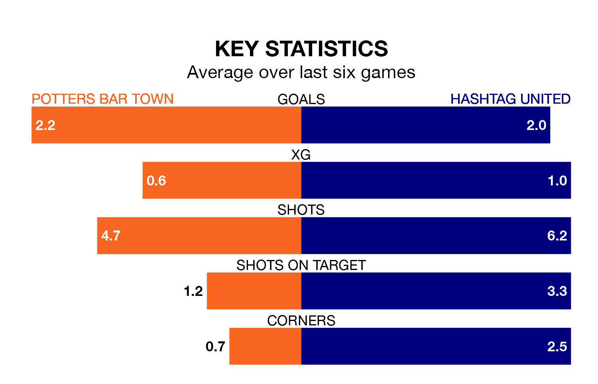

Potters Bar Town host Hashtag United on Tuesday at the Pakex Stadium in Isthmian Premier Division.
In their last league match, on January 1, Potters Bar lost to Billericay Town 2-1 away.
Hashtag also lost, 2-1 away at Dulwich Hamlet on Saturday.
With 26 goals in 20 games so far this season, Potters Bar are scoring at below the league average rate with 1.3 goals per game. And they are conceding at an average rate, letting in 32 goals at a rate of 1.6 per game.
Hashtag, meanwhile, are average scorers, with 1.6 goals per game. They have conceded 1.3 goals per game.
Town are 16th in the table after 20 games, of which they have won six and drawn six, earning 24 points.
United are nine places ahead of the hosts in seventh, with nine wins and eight draws putting them on 35 points.
Potters Bar are in good form in Isthmian Premier Division, with four wins and a draw from their last six games.
With four wins and two losses over that period, the away team's form is slightly worse – they have taken 12 points from 18, compared to Potters Bar's 13.
Updated: 15:34, 08/01/24